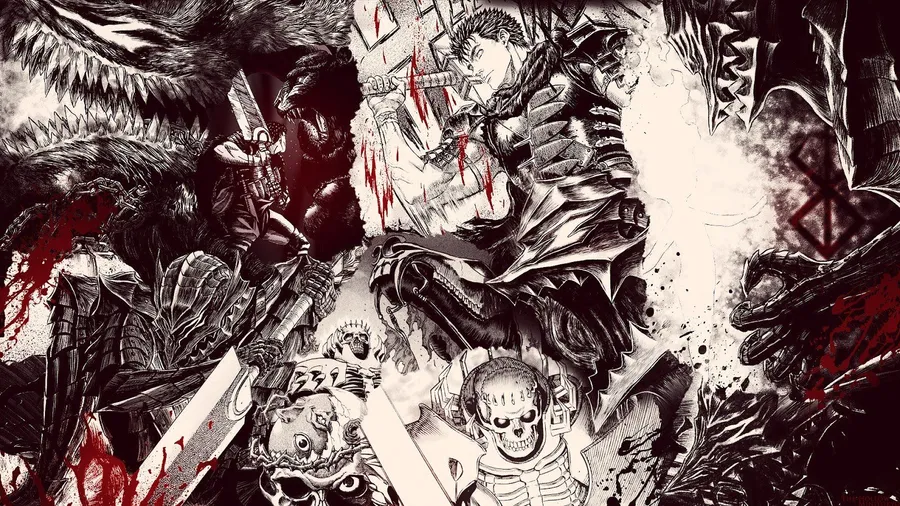

This is a beautiful picture, speaking of gore.
Blending a supernatural curse with a ghost story set in the enigmatic town of 'Kurouzu-cho',
where the haunting is not caused by spirits but by the unsettling manifestation of spirals, creates
an exceptionally eerie, original and spine-tingling tale. Here is a brilliant review
Ito is known for his intricate linework that gives way to visceral gore and body horror.
|
 There are other prominent writers too of Manga gore. Berserk is hailed as the epitome of darkness and gore in manga, yet it remains a beloved favorite among fans worldwide. Kentaro Miura's dark fantasy series 'Berserk' was born in 1989 and continued till his lifetime up until 2021. Who is currently writing Berserk? Berserk has seen four episodes released in 2024, continuing its narrative.
|